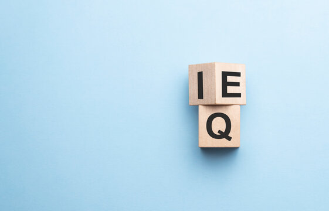

IQ – arguably a measure of one's relative intelligence.
EQ – the ability to assess and manage emotion in oneself or others.
As opposed to IQ, EQ isn't really quantifiable. It feels a little abstract, but the measured affect of one's EQ will be their ability to recognise, understand and therefore manage the emotions that they experience in daily life. This isn't to say these emotions should be stifled, but rather be viewed objectively and respected. The affects of improving EQ can lead to more healthy relationships with others and with oneself, amongst other benefits such as more balanced communication and the ability to better understand what's going on with others.
My view now on the importance of EQ is that it can be a little overlooked in today's world, yet is shapes so much of what we do, and how we act and relate with others and ourselves. Perhaps things have changed since I was at school, but intellectual capability has always generally been the primary measure, yet only makes up a small fraction of us. Our EQ qualities transfer between every aspect of our lives, and are so important in HOW we deliver and utilise our intellectual capabilities.
